초음파비파괴검사기사 (2016-08-21 기출문제)
1과목: 비파괴검사 개론
1. 자분탐상검사의 신뢰도를 향상시킬 수 있는 방법이 아닌 것은?
- 교육과 훈련을 통하여 시험자의 기량을 향상시킨다.
- 검사에 적합한 규격을 선정하여 바르게 적용한다.
- 결함의 검출감도를 높이기 위하여 가급적 높은 전류로 검사한다.
- 생산공정, 예상되는 결함의 종류 등에 따라 검사에 적합한 자화방법을 선정한다.
(정답률: 93%)

2. 다음 중 자외선의 파장 3650Å과 동일한 것은?
- 365nm
- 3650nm
- 36.5nm
- 3.65nm
(정답률: 78%)
3. 비파괴 검사 방법 중 제품이나 부품의 전체적인 모니터링 방법에 사용되는 것은?
- 스트레인 측정
- 방사선투과검사
- 자분탐상검사
- 침투탐상검사
(정답률: 85%)
4. 튜브, 관 같은 부품의 종방향 용접부 내부결함을 신속하게 측정하기 위한 비파괴검사법으로 가장 적합한 조합은?
- 자분탐상시험. 누설검사
- 초음파탐상시험, 침투탐상시험
- 방사선투과시험, 자분탐상시험
- 초음파탐상시험, 와전류탐산시험
(정답률: 83%)
5. 방사선투과검사를 할 때 투과도계는 원칙적으로 어디에 위치해야 하는가?
- 시험체의 선원측에 위치
- 시험체의 필름측에 위치
- 시험체자와 선원측 사이에 위치
- 필름 뒤에 위치
(정답률: 61%)
6. 켈멧(krelmet)에 대한 설명으로 옳은 것은?
- Cu-Zn계 황동으로 볼트, 너트 재료이다.
- Cu-Zn계 황동으로 장식용으로 사용한다.
- Cu-Al계 청동으로 내마모성이 우수하다.
- Cu-Pb계 황동으로 베어링용으로 사용한다.
(정답률: 72%)
7. 다공질 금속의 원리적인 제조방법에 대한 설명으로 틀린 것은?
- 금속분말이나 단섬유를 소결하는 분말야금방법
- 용탕금속 중에 발포제를 직접 첨가해서 발포시키는 방법
- 중력 상태에서 용융금속 내의 가스를 뽑아내는 방법
- 발포재료 등과 같이 밀도가 작은 재료를 금속과 복합화 시키는 방법
(정답률: 60%)
8. 탄소강에서 망간 (Mn)영향으로 옳은 것은?
- 저온취성의 원인이 된다.
- 강의 유동성을 나쁘게 한다.
- 고온에서 결정립 성장을 억제시킨다.
- 결정립의 크기를 증가시키고 소성을 감소시킨다.
(정답률: 44%)
9. 내식성 알루미늄합금에 어떤 원소가 첨가되면 내식성을 악화시키지 않고 소량만으로도 강도를 개선할 수 있는가?
- Fe
- Ni
- Cu
- Mg
(정답률: 66%)
10. 백주철을 탈탄 열처리하여 순철에 가까운 페라이트(ferrite) 기지로 해서 연성을 갖게 한 주철은?
- 백심 가단주철
- 애시큘러 주철
- 흑심 가단주철
- 펄라이트 가단주철
(정답률: 79%)
11. 철강에 합금원소를 첨가하였을 때의 일반적인 효과로 틀린 것은?
- 소성가공성 및 내식성이 저하한다.
- 결정립의 미세화에 따른 강인성이 향상된다.
- 합금원소에 의한 기지의 고용강화가 일어난다.
- 변태속도의 변화에 따른 열처리효과가 향상된다.
(정답률: 75%)
12. 10g의 Au-Ag 합금에 Ag가 5% 함유되어 있을 때, Au의 순도(K, carat)는? (단, 단 기다 원소는 무시한다.)
- 20.6K
- 22.8K
- 23.6K
- 24.8K
(정답률: 65%)
13. 죠미니 시험 결과 [보기]와 같은 결과에 대한 설명으로 옳은 것은?
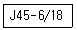
- 퀜칭 끝단으로부터 떨어진 거리가 45mm 사이에 있는 어떤 점에서의 경도 값이 6~18HB에 도달한 것을 의미한다.
- 퀜칭 끝단으로부터 떨어진 거리가 6~18mm 사이에 있는 어떤 점에서의 경도 값이 45HB에 도달한 것을 의미한다.
- 퀜칭 끝단으로부터 떨어진 거리가 45mm 사이에 있는 어떤 점에서의 경도 값이 6~18HRC에 도달한 것을 의미한다.
- 퀜칭 끝단으로부터 떨어진 거리가 6~18mm 사이에 있는 어떤 점에서의 경도 값이 45HRC에 도달한 것을 의미한다.
(정답률: 44%)
14. 일반적으로 상용한도가 300℃ 까지 사용할 수 있는 열전대는?
- Pt-PtㆍRh
- Cu-Constantan
- Chromel-Alumel
- Fe-Constantan
(정답률: 64%)
15. 다음 중 강의 표면경화법이 아닌 것은?
- 오스템퍼링
- 화염경화법
- 침탄처리법
- 질화처리법
(정답률: 83%)
16. 겹치기이음, T이음, 모서리이음에 있어서 거의 직교하는 두 면을 결합하는 3각형 단면의 용착부를 갖는 용접은?
- 필릿 용접
- 비드 용접
- 맞대기 용접
- 플러그 용접
(정답률: 76%)
17. 다음 중 대전류 용접이 가능하고 아크 효율이 95% 이상으로 높으며, 용착 속도가 빠르고 용입이 깊은 용접법은?
- 피복 아크 용접
- 탄산 가스 아크 용접
- 서브머지드 아크 용접
- 불활성 가스 아크 용접
(정답률: 78%)
18. 교류 용접기는 무부하 전압이 비교적 높기 때문에 감전의 위험이 있으므로 용접사를 보호하기 위해 부착하는 장치는?
- 무부하 장치
- 핫 스타트 장치
- 원격 제어 장치
- 전격 방지 장치
(정답률: 56%)
19. 피복아크용접에서 아크전압이 20V, 아크전류는 150A, 용접속도가 15cm/min 일 때 용접입열은 몇 Joule/cm 인가?
- 12000
- 22000
- 24000
- 45000
(정답률: 70%)
20. 다음 중 구조상 결함이 아닌 것은?
- 기공
- 변형
- 균열
- 언더컷
(정답률: 77%)
2과목: 초음파탐상검사 원리
21. 초음파탐상검사에 대한 설명으로 옳은 것은?
- 강판의 라미네이션 탐상에는 주로 경사각탐상이 이용된다.
- 강의 맞대기 용접부 탐상에는 주로 수직탐상이 이용된다.
- 모서리 이음이나 T이음 등의 용접부에서 수직탐상이 유효한 경우에는 그것을 병용한다.
- 차축의 탐상에는 수직탐상과 두께측정기를 반드시 병용한다.
(정답률: 58%)
22. 그림과 같이 강에 표면파를 발생하게 하려면 경사각 탐촉자의 쐐기는 약 몇 도의 경사를 가져야 하는가? (단, 쐐기의 재료는 아크릴이고 아크릴의 VAL=2730m/s, VSS=1430m/s, 강의 VSL=5900m/s, VAS=3200m/s 이다.)
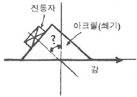
- 14.0˚
- 26.5˚
- 27.2˚
- 58.5˚
(정답률: 27%)
23. 초음파탐상검사에서 판파의속도에 영향을 미치지 않는 것은?
- 시험체의 밀도
- 시험체의 두께
- 시험체의 화학조성
- 주파수
(정답률: 60%)
24. 초음파탐상시험의 접촉매질에 대한 설명으로 가장 거리가 먼 것은?
- 글리세린은 음향임피던스가 크므로 전달 특성이 좋다.
- 물은 표면이 거친 제품 탐상의 접촉매질로 적합하다.
- 페이스트는 경사면에서의 접촉매질로 적합하다.
- 크리스를 접촉매질로 사용할 수 있다.
(정답률: 52%)
25. 초음파탐상검사에서 직경이 2.5cm, 주파수가 5MHz인 탐촉자의 근거리 음장은? (단, V=1.4×105cm/s 이다.)
- 0.028cm
- 6.25cm
- 55.8cm
- 72.3cm
(정답률: 49%)
26. 초음파탐상장비에서 CRT상에서 관찰 가능한 범위를 변화시키거나 CRT상의 지시를 임의의 위치로 이동시키는 기능과 관련이 있는 장치는?
- 소인회로
- 펄스회로
- 타이머회로
- 수신ㆍ증폭회로
(정답률: 64%)
27. 곡면 음향렌즈의 곡률반경과 초점거리의 관계는?
- 곡률반경과 초점거리는 비례한다.
- 곡률반경과 초점거리는 반비례한다.
- 초점거리는 곡률반경의 제곱근에 비례한다.
- 초점거리는 곡률반경의 제곱근에 반비례한다.
(정답률: 43%)
28. 초음파탐상검사에서 물질 내에서의 음속은 어느 것에 기인하는가?
- 주파수
- 파장
- 물질의 재질
- 진동주기
(정답률: 59%)
29. 초음파탐상검사에서 아래 보기 중 감쇠현상을 크게 일으키는 주파수는?
- 0.5kHz
- 1.0MHz
- 15kHz
- 25MHz
(정답률: 69%)
30. 표면이 거친 부품을 초음파탐상검사를 할 경우 만족할 만한 시험효과를 얻기 위하여 일반적으로 표면이 매끈한 부품에 사용하는 경우와 비교한 설명으로 옳은 것은?
- 표면이 매끈한 부품에 사용하는 경우보다 더 낮은 주파수의 탐촉자와 점성이 높은 접촉 매질을 사용한다.
- 표면이 매끈한 부품에 사용하는 경우보다 더 높은 주파수의 탐촉자와 점성이 높은 접촉 매질을 사용한다.
- 표면이 매끈한 부품에 사용하는 경우보다 더 높은 주파수의 탐촉자와 점성이 낮은 접촉 매질을 사용한다.
- 표면이 매끈한 부품에 사용하는 경우보다 더 낮은 주파수의 탐촉자와 점성이 낮은 접촉 매질을 사용한다.
(정답률: 77%)
31. 그림은 수침법을 이용한 초음파 탐상시험에서 표시기에 나타난 탐상도형이다. CRT상에서 물거리는 어느 부분을 나타내는가? (단, A는 송신펄스, B는 전면반사지시, C는 불연속지시, D는 저면반사지시를 나타낸다.)
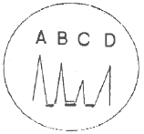
- A~B 거리
- B~C 거리
- B~D 거리
- C~D 거리
(정답률: 73%)
32. 음파와 전자파에 대한 비교 설명이 틀린 것은?
- 액체에서는 음파보다는 전자파가 잘 진행한다.
- 음파는 전자파보다 속도가 느리다.
- 음파는 전자파보다 파장이 길다.
- 진공에서 전자파는 진행하나 음파는 진행하지 않는다.
(정답률: 60%)
33. 두께측정에 사용되는 공진 원리의 설명으로 틀린 것은?
- 시험편의 두께가 초음파의 반파장 정수배에서 공진이 일어난다.
- 초음파의 파장은 주파수를 이용하여 조정한다.
- 공진의 확인은 수신된 펄스크기의 감소로 알 수 있다.
- 공진법은 두 면이 평행인 얇은 시험체의 두께를 측정하는 데 주로 사용된다.
(정답률: 41%)
34. 단강품의 초음파탐상시험에 대해 설명으로 옳은 것은?
- 단강품은 재질이나 형상이 다양하지 않기 때문에 항상 격사각탐상법이 적용된다.
- 단조한 그대로는 스케일이 부착되어 있는 경우가 많기 때문에 표면을 기계가공하여 매끄럽게 할 필요가 있다.
- 접촉매질로 물이나 공기를 이용하는 것이 많지만 표면이 거칠 때는 글리세린 또는 물유리를 사용한다.
- 주사범위는 검출해야 할 결함의 종류, 방향, 크기 및 사용상의 영향을 고려하여 결정한다.
(정답률: 58%)
35. 콘크리트에 대한 초음파탐상검사의 특징이 아닌 것은?
- 고주파수 초음파는 감쇠가 심하므로 수십~수백 kHz의 초음파를 사용한다.
- 복합재료이므로 음속, 감쇠 등이 초음파 특성의 편차가 크다.
- 타설 발향에 의한 음향이방성이 나타나는 경우가 있다.
- 초음파의 지향성이 좋아지기 때문에 이상부의 위치 정확도가 좋아진다.
(정답률: 63%)
36. 서로 다른 재질의 경계면에서 임피던스가 다르게 되면 초음파는 어떤 현상이 발생하는가?
- 초음파가 모두 흡수된다.
- 초음파가 모두 반사된다.
- 초음파가 모두 굴절된다.
- 일부는 투과하고 일부는 반사된다.
(정답률: 73%)
37. 탄소강(음향 임피던스 Z1)에 스테인리스강(음향임피던스 Z2)이 클래딩되어 있다. 탄소강 측에서 2MHz로 수직탐상하였을 때 경계면에서의 음압 반사율은?
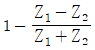
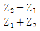
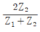
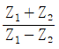
(정답률: 68%)
38. 두께 10mm 미만의 강판에 존재하는 라미네이션의 검출에 관한 초음파탐상검사의 설명으로 옳은 것은?
- 일탐촉자에 의한 경사각탐상이 좋다.
- 탠덤법에 의한 경사각탐상이 좋다.
- 수직탐상에 의한 다중반사법의 탐상이 좋다.
- 수직탐상에 의한 저면에코를 탐상하는 것이 좋다.
(정답률: 20%)
39. 초음파탐상검사에서 검출해야 할 결함의 위치와 크기를 알고 있을 때, 탐상감도 검출레벨을 정하고 또 검출한 결함의 크기를 원형등가 크기로 추정하는 방법으로 옳은 것은?
- 데시벨 드롭법
- DGS선도법
- 문턱값에 의한 방법
- APP선도법
(정답률: 64%)
40. 그래프에서와 같은 주파수 응답으로 볼 때, 이 탐촉자의 대략적인 밴드(BAND) 폭은?
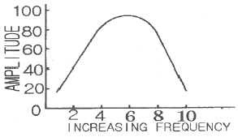
- 1MHz
- 4MHz
- 6MHz
- 9MHz
(정답률: 60%)
3과목: 초음파탐상검사 시험
41. 경사각 탐촉자의 입사점과 굴절각을 측정할 경우 에코의 높이는 몇 % 정도로 하는 것이 가장 적절한가?
- 10~20%
- 25~45%
- 50~80%
- 90~100%
(정답률: 62%)
42. 용접부의 초음파탐상검사에서 용접선에 평행한 방향으로 놓인 불연속이 검출되어 결함의 지시길이를 dB drop법으로 결정하려 할 때 가장 바람직한 주사방법은?
- 전후 주사
- 진자 주사
- 좌우 주사
- 목돌림 주사
(정답률: 77%)
43. 초음파와 결함과의 각도가 얼마일 때 최대 에코를 얻을 수 있는가?
- 45˚
- 60˚
- 70˚
- 90˚
(정답률: 62%)
44. TOFD(Time of Flight Doffraction)에 의한 초음파탐상검사 방법에 관한 설명으로 틀린 것은?
- 반사파가 아닌 회절파를 이용하는 방법으로 결함의 깊이를 측정할 수 있다.
- 횡방향 주사만으로 전체 용접부의 검사가 가능하다.
- 결함의 방향에 의한 영향이 적어 안정적인 탐상이 가능하다.
- 불감대가 없어 표면을 포함한 전체 용접부 단면을 1회에 검사할 수 있다.
(정답률: 50%)
45. 초음파 에코를 CRT 스크린이나 다른 기록장치에 나타내는 B주사표시법에 해당하는 설명은?
- 수평축은 경과시간을 나타내고 수직축은 에코높이를 나타내는 방법이다.
- 시험체 내의 결함이 초음파 빔과 일직선 상에 여러 개가 있는 경우에는 각각 분리되어 나타낸다.
- 초음파 빔과 탐촉자 주사방향에 수직으로 있는 결함은 넓이를 기록할 수 있다.
- 일반적으로 시험체의 저면측 결함이 표면 결함보다 길게 나타난다.
(정답률: 16%)
46. 수침법에 의한 초음파 탐상검사를 할 때 필요에 따라 음향렌즈를 사용하기도 한다. 이 때 사용되는 음향렌즈에 대한 설명으로 옳은 것은?
- 렌즈는 크기가 커야 한다.
- 진동자에 음향렌즈를 부착하면 음향 집속효과를 갖는다.
- 빔을 집속하면 검사 유효범위가 넓어진다.
- 볼록렌즈를 사용하는 경우에는 음파가 접속된다.
(정답률: 61%)
47. AVG선도 또는 DGS선도에 나타나지 않는 정보는?
- 거리(Distance)
- 증폭(Gain)
- 음파의 속도
- 결함의 크기
(정답률: 48%)
48. 철과 알루미늄이 균일하게 접합된 시험체에 알루미늄판에서 발생한 초음파가 칠판으로 수직 입사할 때 음압반사율은 약 몇 % 가 되는가? (단, 알루미늄 : 밀도 2.7g/cm3, 음속 6400m/s, 철 : 밀도 7.8g/cm3, 음속 5900m/s, 초음파의 진행에 따른 감쇠는 없는 것으로 한다.)
- 45%
- 64%
- 79%
- 97%
(정답률: 30%)
49. 펄스반사식 초음파 탐상법에서 용접부 검사를 위한 경사각탐촉자의 주사방법 중 초음파빔이 판의 두께방향 전체를 통과하도록 하여, 결함의 깊이와 높이를 추정하는 데 사용되는 주사방법은?
- 전후주사
- 좌우주사
- 진자주사
- 목독림주사
(정답률: 48%)
50. 그림과 같이 탐상도형이 나타났을 때 F1이 50%이고 B1이 80%이면 F1/B1을 dB값으로 나타내면 어떻게 되는가?
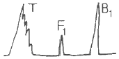
- -1dB
- -4dB
- -6dB
- -8dB
(정답률: 71%)
51. 초음파 탐상기의 송신기에 대한 기능으로 옳은 것은?
- 시간축을 제어한다.
- 탐상 게이트를 설정한다.
- 수신된 신호를 증폭한다.
- 고전압 전기펄스를 발생시킨다.
(정답률: 64%)
52. 그림과 같이 A-스캔 탐상검사에서 날카로운 형태의 에코를 탐상하였다. 탐촉자를 좌우주사할 때, 진폭이 일정한 구간에서 거의 변화가 없거나 약간의 변화를 하고, 전후주사할 때, 진폭이 부드럽게 변하는 경우의 결함 종류로 옳은 것은?
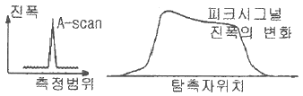
- 복수 결함
- 단일 점상 결함
- 크고 평활한 반사체
- 크고 불규칙한 반사체
(정답률: 60%)
53. 2진동자 탐촉자가 주로 사용되는 탐상은?
- 탐상면에서 먼 곳의 결함
- 탐상면에서 가까운 곳의 결함
- 탐상면에서 평행한 곳의 결함
- 탐상면에서 수직방향으로 있는 결함
(정답률: 46%)
54. 경사각 탐상을 이용하여 결함의 최고 에코가 76%가 나왔을 때 6dB drop법을 이용할 경우 결함의 시작점과 끝점의 에코 높이는?
- 20%
- 32%
- 38%
- 43%
(정답률: 66%)
55. 초음파탐상시험에서 거리 또는 방향이 다른 근접한 2개의 반사원으로부터 에코를 충분히 분리하여 식별하기 위하여 사용할 수 있는 방법으로 틀린 것은?
- 초음파탐상기의 수신부가 증폭하는 주파수대역을 가능한 좁힌다.
- 높은 주파수의 초음파를 발생하는 탐촉자를 사용한다.
- 광대역탐촉자를 사용한다.
- 댐핑이 양호한 탐촉자를 사용한다.
(정답률: 39%)
56. 경사각탐촉자를 이용한 용접부의 초음파탐상검사를 할 때 균열에 의한 에코신호의 설명으로 옳은 것은?
- 균열에 의한 반사파의 에코높이는 어떠한 결함보다 크게 나타난다.
- 초음파 빔의 방향과 균열의 방향이 수직하지 않은 경우 검출되지 않을 수도 있다.
- 항상 용접축을 따라 일직선으로 나타나므로 좌우주사에 의한 에코높이의 변화가 거의 없다.
- 진자주사를 하면 반사파의 에코높이가 거의 변화하지 않는다.
(정답률: 46%)
57. 초음파탐상검사에서 2탐촉자법의 분류로 틀린 것은?
- 두갈래주사
- K주사탐상법
- 진자주사
- 탠덤탐상법
(정답률: 68%)
58. 두갈래 주사(straddle scanning)로 경사각탐상을 할 때 송신 탐촉자와 수신 탐촉자의 각도로 옳은 것은?
- 45˚
- 60˚
- 100˚
- 180˚
(정답률: 30%)
59. 그림과같이 STB A7963형 시험편의 두 곡면(25mm 및 50mm)을 이용하여 경사각탐촉자의 거리보정을 하려고 한다. 스크린의 시간축을 125mm로 보정한 경우 스크린에 나타나는 에코지점이 아닌 것은? (단, 경사각탐촉자 음파의 입사 방향은 그림과 같이 25mm 곡면을 향하고 있음)
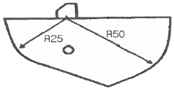
- 0mm
- 25mm
- 75mm
- 100mm
(정답률: 42%)
60. 초음파탐상검사 방법을 선정할 때 고려하지 않아도 되는 것은?
- 탐상방향의 선정
- 검사품의 색채
- 불감대
- 검출레벨
(정답률: 69%)
4과목: 초음파탐상검사 규격
61. 강 용접부의 초음파탐상 시험방법(KS B 0896)에서 적용할 수 있는 모재 두께의 하한치는 몇 mm인가?
- 4
- 6
- 8
- 10
(정답률: 62%)
62. 강관의 초음파탐상검사 방법(KS D 0250)에 따른 인공 흠의 종류로 틀린 것은?
- 각 흠
- V 흠
- 드릴 구멍
- U 흠
(정답률: 53%)
63. 보일러 및 압력용기의 재료에 대한 초음파탐상시험(ASME Sec.V, Art.4)에서 오스테나이트계 스테인레스강 또는 티타늄에 사용되는 탐촉자의 접촉 매질은 몇 ppm 이상의 할로겐 화합물을 포함하지 않도록 하였는가?
- 100
- 150
- 200
- 250
(정답률: 74%)
64. 강 용접부의 초음파탐상 시험방법(KS B 0896)에 따라 상온(10~30℃)에서 시럼부위를 경사각탐상할 때 굴절각 70˚인 경사각 탐촉자의 실제 굴절각을 점검하였다. 다음 중 탐상검사에 사용해서는 안되는 참촉자의 굴절각은?
- 69.0˚
- 69.5˚
- 71.0˚
- 72.5˚
(정답률: 65%)
65. 금속재료의 펄스반사법에 따른 초음파탐상 시험방법 통칙(SK B 0817)에 따른 탐상 도형을 표시하는 기본 기호가 틀린 것은?
- T : 송신 펄스
- F : 측면 에코
- B : 바닥면 에코
- S : 표면 에코
(정답률: 70%)
66. 초음파탐상 시험용 표준시험편(KS B 0831)에서 규정한 표준 시험편과 탐상 방법의 조합으로 틀린 것은?
- G형 STB : 수직 및 경사각
- NI형 STB : 수직
- A1형 STB : 수직 및 경사각
- A3형 STB : 경사각
(정답률: 50%)
67. 보일러 및 압력용기의 재료에 대한 초음파탐상시험(ASME Sec.V, Art.4)에서 니켈합금에 사용하는 접촉매질은 몇 ppm 이상의 황(S)으로 제한하고 있는가?
- 5
- 50
- 150
- 250
(정답률: 69%)
68. 보일러 및 압력용기의 재료에 대한 초음파탐상시험(ASME Sec.V, Art.23 SA-388)에 따른 절차를 수행할 때 잘못된 것은?
- 주사속도는 초당 152mm 이하이어야 한다.
- 단강품 전체를 검사하기 위해 탐촉자 경로는 최소 10%씩 증가한ㄷ.
- 가능한 한 단강품의 전체 단면적을 서로 수직인 방향에서 주사한다.
- 열처리가 요구되는 단강품의 형상이 초음파탐상검사에 지장을 주면 기계적 특성을 위한 열처리에 앞서 검사를 수행한다.
(정답률: 39%)
69. 보일러 및 압력용기의 재료에 대한 초음파탐상시험(ASME Sec.V, Art.5)에 따라 시험절차서를 작성하고자 할 때 절차서에 반드시 포함되어야 할 사항이 아닌 것은?
- 탐촉자 수파수
- 검사체의 두께 및 크기
- 교정에 사용된 시험편
- 검사체의 허용온도 범위
(정답률: 60%)
70. 강 용접부의 초음파탐상 시험방법(KS B 0896)에서 규정된 진동자의 공칭치수가 20×20mm 이고, 굴절각이 70˚일 때 접근한계거리는?
- 15mm
- 18mm
- 25mm
- 30mm
(정답률: 15%)
71. 금속재료의 펄스반사법에 따른 초음파탐상 시험방법 통칙(KS B 0817)에 의거 초음파탐상시험을 실시하고 시험의 결과를 평가하는 경우 고려하여야 할 사항에 해당되지 않는 것은?
- 흠집의 에코 높이
- 흠집의 에코 위치
- 흠집의 지시 길이
- 흠집의 지시 높이
(정답률: 41%)
72. 강 용접부의 초음파탐상 시험방법(KS B 0896)에 따라, 동일하다고 간주되는 깊이에서 흠과 흠의 간격이 큰 쪽의 흠의 지시길이와 같거나 그것보다 짧은 경우는 어떻게 분류하는가?
- 독립 결함으로 긴 쪽 길이를 기준한다.
- 독립 결함으로 짧은 쪽 길이를 기준한다.
- 각각의 흠군으로 간주하고, 그것들을 각각의 흠으로 나누어 흠을 분류한다.
- 동일한 흠군으로 간주하고, 그것들을 간격까지 포함시켜 연속한 흠으로 간주한다.
(정답률: 69%)
73. 보일러 및 압력용기의 재료에 대한 초음파탐상시험(ASME Sec.V, Art.4)에 따라 지름이 200mm인 교정시험편으로 교정에 사용할 수 있는 시험체의 곡률 범위는?
- 140~260mm
- 160~280mm
- 180~300mm
- 200~320mm
(정답률: 47%)
74. 압력용기용 강판의 초음파탐상검사방법(KS D 0233)의 규격의 설명으로 옳은 것은?
- 이 규격에 규정된 이외의 일반사항은 KS D 0235의 금속 재료의 펄스반사법에 따른다.
- 6mm 이하인 고품질 킬드강판 중 스테인레스강 판재의 초음파탐상검사에 대한 규정이다.
- 원자로, 보일러, 압력 용기 등에 주로 사용한다.
- 주사속도는 초당 200mm 이내로 하고 자동경보장치를 갖춘 수침법의 경우는 제한받지 않는다.
(정답률: 47%)
75. 보일러 및 압력용기의 재료에 대한 초음파탐상시험(ASME Sec.V, Art.23 SA-388)에 따라 오스테나이트 스테인리스의 단강품을 초음파 탐상검사로 결함을 검출하는데 가장 효과적인 주파수는?
- 1MHz
- 2.25MHz
- 5MHz
- 10MHz
(정답률: 52%)
76. 강 용접부의 초음파탐상 시험방법(KS B 0896)에 따라 강 용접부 두께 6mm를 탐상하고자 한다. 전원 전압의 변동에 따라 탐상기의 감도변화와 세로축 및 시간축의 이동량은 다름 중 어느 범위 내까지 허용되는가?
- 감도변화는 ±1dB, 세로축 및 시간축 이동량은 풀 스케일의 ±1%
- 감도변화는 ±1dB, 세로축 및 시간축 이동량은 풀 스케일의 ±2%
- 감도변화는 ±2dB, 세로축 및 시간축 이동량은 풀 스케일의 ±1%
- 감도변화는 ±2dB, 세로축 및 시간축 이동량은 풀 스케일의 ±2%
(정답률: 26%)
77. 강 용접부의 초음파탐상 시험방법(KS B 0896)에서 경사각 탐상 시 초음파가 통과하는 부분의 모재는 필요에 따라 미리 수직탐상을 하여 탐상에 방해가 되는 흠을 미리 검출해야 하는데 이때 탐상감도는 어떻게 해야 하는가?
- 건전부의 제1회 바닥면 에코높이가 50%가 되게 한다.
- 건전부의 제1회 바닥면 에코높이가 80%가 되게 한다.
- 건전부의 제2회 바닥면 에코높이가 50%가 되게 한다.
- 건전부의 제2회 바닥면 에코높이가 80%가 되게 한다.
(정답률: 46%)
78. 건축용 강판 및 평강의 초음파탐상시험에 따른 등급분류와 판정기준(KS D 0040)에 따라 40mm초과 60mm 이하의 강판에 대한 초음파탐상을 실시 할 때 수직 탐촉자의 공칭 주파수로 옳은 것은?
- 5MHz
- 7MHz
- 8MHz
- 9MHz
(정답률: 73%)
79. 보일러 및 압력용기의 재료에 대한 초음파탐상시험(ASME Sec.V, Art.23 SA-388)에 따라 2인치 두께를 갖는 강판을 검사할 때, 전체 저면반사의 손실을 일으키는 분연속부의 최대합격 지름은 얼마인가?
- 2.54cm(1인치)
- 5.08cm(2인치)
- 7.62cm(3인치)
- 10.16cm(4인치)
(정답률: 38%)
80. 초음파탐상장치의 성능측정 방법(KS B ⑤34)에서 탐촉자의 공통측정 항목이 아닌 것은?
- 시험주파수
- 전기임피던스
- 빔 중심축의 편심과 편심각
- 진동자의 유효치수
(정답률: 39%)